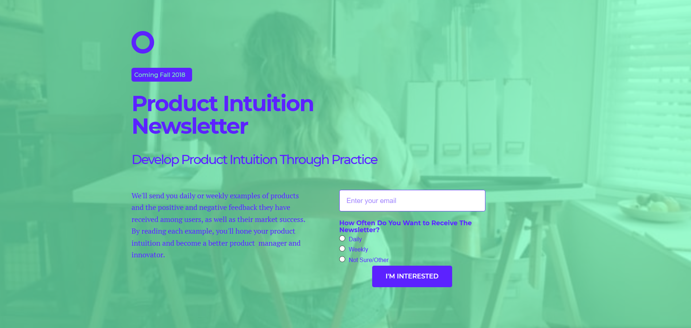

    <div id="portfolio-page" class="portfolio-page-content">
    <div class="container">
        <div class="portfolio-nav">
            <div id="portfolio-close-button" class="portfolio-close-button">
                <a href="#portfolio"><i class="fa fa-close"></i></a>
            </div>
        </div>

        <div class="portfolio-title">
            <h1>Product Intuition Newsletter</h1>
        </div>

        <div class="row">
            <div class="col-sm-7 col-md-7 portfolio-block">
                <div class="owl-carousel portfolio-page-carousel">
                    <div class="item">
                        
                    </div>
                </div>

                <script type="text/javascript">
                    jQuery(document).ready(function($){
                        $('.portfolio-page-carousel').owlCarousel({
                            smartSpeed:1200,
                            items: 1,
                            loop: true,
                            dots: true,
                            nav: true,
                            navText: false,
                            margin: 10
                        });
                    }); 
                </script>
            </div>

            <div class="col-sm-5 col-md-5 portfolio-block">
                <!-- Project Description -->
                <div class="block-title">
                    <h3>Description</h3>
                </div>
                <ul class="project-general-info">
                    <!--<li><p><i class="fa fa-globe"></i> <a href="http://www.scicademy.org/index.html" target="_blank"></a></p></li>-->
                    <li><p><i class="fa fa-calendar"></i>Summer 2018</p></li>
                </ul>

                <p class="text-justify">The Product Intuition Newsletter (PIN) was created as a way for me (Aram) to personally
                hone my product intuition skills. The value hypothesis was that others out there wanted a digestible
                yet occasional way to sharpen their product intuition.</p>
                <!-- /Project Description -->

                <!-- User & Market Research -->
                <div class="block-title">
                    <h3>User & Market Research</h3>
                </div>
                <p class="text-justify">LinkedIn has a mentoring service that connected Aram with many other product managers.
                Through these, I was able to interview eight product managers about their product intuition skills. I found
                    that many did not see product intuition as a skill that they were keen on developing; they were more
                    focused on other skills such as team building and user research. Two PMs did think product intuition
                    was an important skill, however, meaning this could be a niche product. Most said it was a nice idea,
                    but this should be disregarded since people don't know what they want and will always
                say something is a good idea to make you feel nice.</p>
                <!-- /User & Market Research-->

                <!-- Execution & Methodology -->
                <div class="block-title">
                    <h3>Execution & Methodology</h3>
                </div>
                <p class="text-justify">I spun up a simple early access landing page to see if people desired a way to
                sharpen their product intuition. I could have surveyed them, but actually entering their email is a much
                stronger indicator. But sometimes people just sign up because they're curious, so I emailed all the people
                who signed up asking them to rate this product intuition development problem on a scale from 1-5. The median
                response was a 2, so I saw that as a sign that this may not provide much value and would likely lead to many
                people unsubscribing after a week or two.</p>
                <!-- /Execution & Methodology-->

                <!-- Outcome -->
                <div class="block-title">
                    <h3>Outcome</h3>
                </div>
                <p class="text-justify">I saved hours of producing product intuition content for a crowd that would likely
                lose interest quickly and did not have a big enough problem.</p>
                <!-- /Outcome-->

                <!-- Lessons -->
                <div class="block-title">
                    <h3>Lessons</h3>
                </div>
                <p class="text-justify">I think the strategy of emailing landing page signups asking them to rate the
                problem is an effective method to determine if people are just curious or actually struggling with a problem.
                It's also important to realize that all products are not situated to help all people, even within a product
                category. For example, if I had launched this product, it may have been very helpful to a niche of product
                managers. So you can still provide significant value to a small amount of people in a niche, the question
                is whether it is worth your time to do that.</p>
                <!-- /Lessons-->

            </div>
        </div>
    </div>
</div>
